Ruta principal y componentes productivos del servidor existente en el puerto 3000. Datos sintéticos y fotografías de prueba. Misma posición de scroll y escala 1 en cada pareja; las composiciones no se redimensionaron. Abre el PNG para inspeccionarlo a tamaño original.
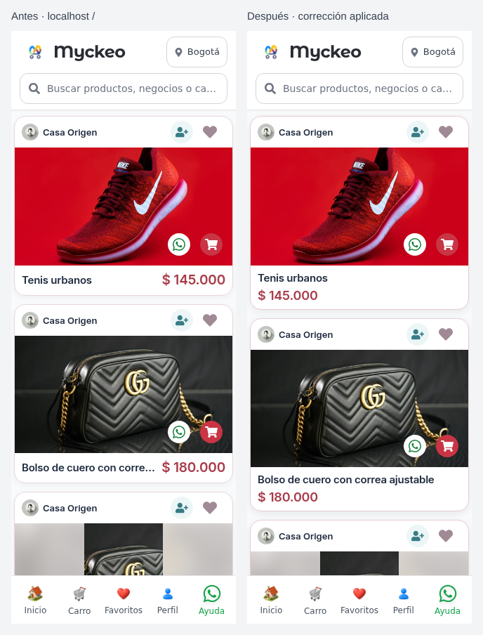
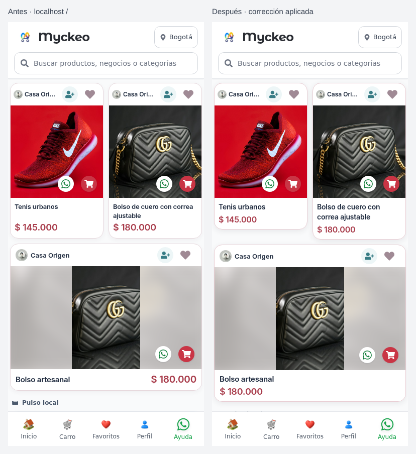
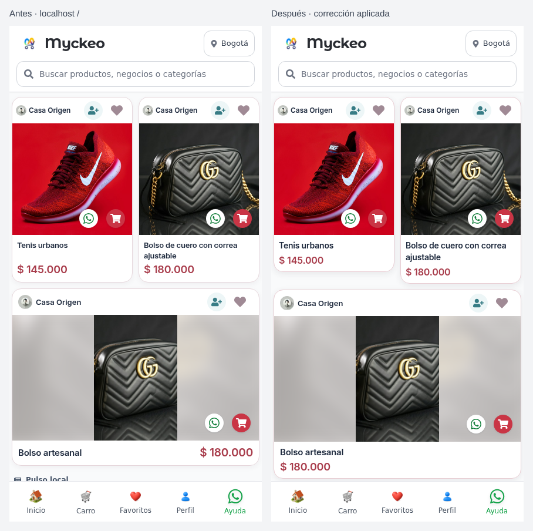
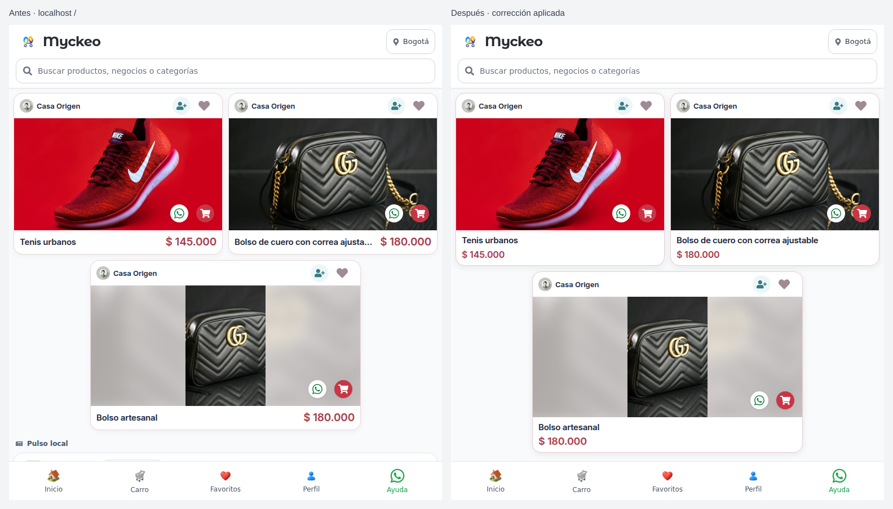
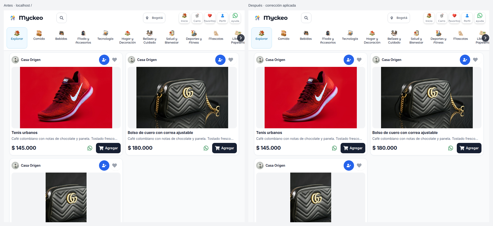
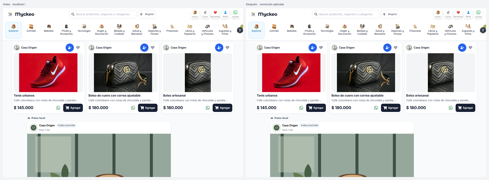
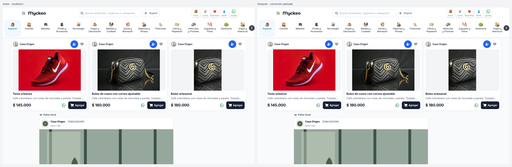
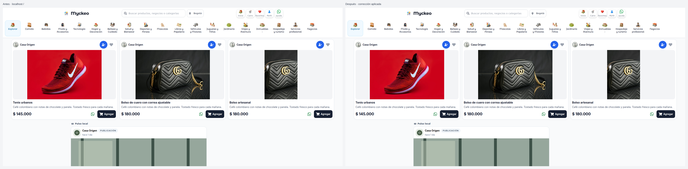
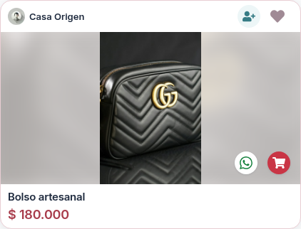
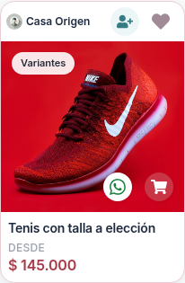
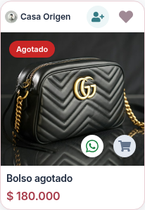
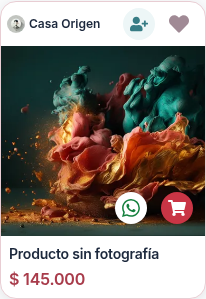
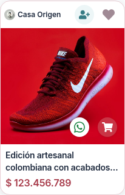